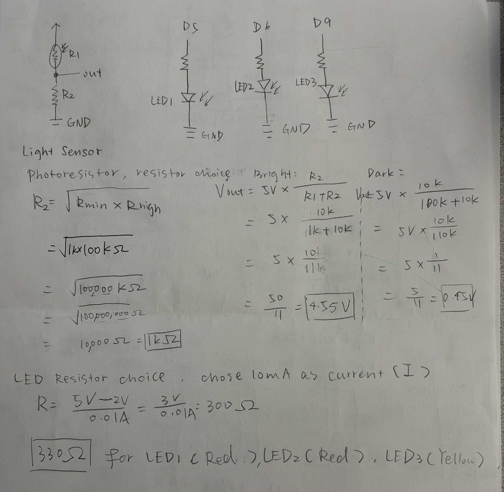

For this assignment, I designed and built a smart light indicator using an Arduino Uno, a photoresistor, three LEDs, resistors, and a breadboard. The photoresistor senses changes in ambient light, while the three LEDs indicate different lighting conditions. The red LED indicates darkness, the yellow LED indicates medium lighting, and the green LED indicates bright lighting. This project uses a voltage divider to convert changes in light intensity into measurable voltage changes.
I created a schematic to plan the connections between the Arduino Uno, the photoresistor, the voltage divider, and the three LEDs. The photoresistor and a fixed 10kΩ resistor form a voltage divider. The midpoint of the voltage divider is connected to analog pin A0. Each LED is connected to a digital output pin through its own 330Ω resistor.

I used a photoresistor as R1 and a fixed 10kΩ resistor as R2. The photoresistor changes resistance depending on the amount of light reaching it. The voltage divider converts these resistance changes into a voltage that Arduino can read through pin A0.
The voltage divider equation is:
Vout = Vin × R2 / (R1 + R2)
In my circuit, Vin = 5V and R2 = 10,000Ω.
Therefore:
Vout = 5 × 10,000 / (Rphoto + 10,000)
I collected actual analog readings from my Serial Monitor under bright, medium, and dark lighting conditions. Since I know the fixed resistor value, I can estimate the photoresistor resistance by rearranging the voltage divider equation.
Rphoto = 10,000 × (1023 - Light) / Light
Under bright light, my Arduino recorded:
analogRead(A0) = 988
Vout = 4.83V
Rphoto = 10,000 × (1023 - 988) / 988
Rbright ≈ 354Ω
Under normal room lighting, my Arduino recorded:
analogRead(A0) = 619
Vout = 3.03V
Rphoto = 10,000 × (1023 - 619) / 619
Rmedium ≈ 6.53kΩ
When I covered the photoresistor, my Arduino recorded:
analogRead(A0) = 125
Vout = 0.61V
Rphoto = 10,000 × (1023 - 125) / 125
Rdark ≈ 71.84kΩ
To calculate an appropriate fixed resistor, I used the geometric mean of the estimated bright and dark resistance values.
R = √(Rbright × Rdark)
R = √(354 × 71,840)
R ≈ 5.04kΩ
The geometric mean suggests approximately 5.04kΩ as a reference value for this measured resistance range. I used an available 10kΩ resistor in my actual circuit because it still produced a wide and measurable voltage range, from approximately 0.61V to 4.83V. This range allowed Arduino to distinguish between dark, medium, and bright conditions.
These resistance values are estimates calculated from my analog readings, rather than direct multimeter measurements.
I used Ohm's Law to choose current-limiting resistors for my three LEDs. I selected a target current of approximately 10mA per LED.
R = (Vsource - Vforward) / I
Vsource = 5V
Target current = 10mA = 0.01A
Assuming a forward voltage of approximately 2.0V:
R = (5V - 2V) / 0.01A
R = 300Ω
I selected the commonly available 330Ω resistor to limit the current.
I = (5V - 2V) / 330Ω
I ≈ 9.09mA
Assuming a forward voltage of approximately 3.2V for the green LED:
R = (5V - 3.2V) / 0.01A
R = 180Ω
I used an available 330Ω resistor, which limits the estimated current to:
I = (5V - 3.2V) / 330Ω
I ≈ 5.45mA
All three LEDs have their own resistors, keeping their expected current below 10mA per pin under these assumptions. Actual LED forward voltages and currents may vary.
I assembled the circuit on a breadboard using an Arduino Uno. The photoresistor connects to 5V and the fixed 10kΩ resistor connects to GND. Their shared connection point is connected to Arduino analog input pin A0. The three LEDs are connected to digital pins 5, 6, and 9. Each LED has a 330Ω resistor, and all three LED circuits share a common ground.
I programmed the Arduino to read the voltage divider using analogRead(). The map() function converts the analog input range of 0–1023 into a PWM output range of 0–255. The analogWrite() function controls the green LED brightness. I used if-statements to determine which LED should turn on based on the measured light level. The program also prints the sensor value, voltage, elapsed time, and lighting condition to the Serial Monitor.
Dark: Light values from 0 to 349 turn on the red LED.
Medium: Light values from 350 to 699 turn on the yellow LED.
Bright: Light values from 700 to 1023 activate the green LED with PWM brightness control.
I chose 350 and 700 as thresholds to divide the sensor readings into three useful lighting categories. These thresholds correspond to approximately 1.71V and 3.42V at A0. They are design choices based on my prototype's sensor readings, rather than universal lighting standards.
// Define the red LED pin.
const int redLED = 5;
// Define the yellow LED pin.
const int yellowLED = 6;
// Define the green LED pin.
const int greenLED = 9;
// Define the photoresistor input pin.
const int sensorPin = A0;
// Run setup once when Arduino starts.
void setup() {
// Set the red LED as an output.
pinMode(redLED, OUTPUT);
// Set the yellow LED as an output.
pinMode(yellowLED, OUTPUT);
// Set the green LED as an output.
pinMode(greenLED, OUTPUT);
// Set the photoresistor pin as an input.
pinMode(sensorPin, INPUT);
// Start serial communication at 9600 baud.
Serial.begin(9600);
}
// Repeat the main program continuously.
void loop() {
// Read the light sensor value from 0 to 1023.
int lightValue = analogRead(sensorPin);
// Map the sensor value to PWM brightness.
int brightness = map(lightValue, 0, 1023, 0, 255);
// Convert the analog reading to voltage.
float voltage = lightValue * 5.0 / 1023.0;
// Print the elapsed time label.
Serial.print("Time: ");
// Print the elapsed time in milliseconds.
Serial.print(millis());
// Print the sensor reading label.
Serial.print(" ms | Light: ");
// Print the sensor reading.
Serial.print(lightValue);
// Print the voltage label.
Serial.print(" | Voltage: ");
// Print the calculated voltage.
Serial.print(voltage);
// Check whether the room is bright.
if (lightValue >= 700) {
// Turn off the red LED.
digitalWrite(redLED, LOW);
// Turn off the yellow LED.
digitalWrite(yellowLED, LOW);
// Adjust green LED brightness with PWM.
analogWrite(greenLED, brightness);
// Print the bright condition.
Serial.println(" V | BRIGHT");
}
// Check whether the room has medium light.
else if (lightValue >= 350) {
// Turn off the red LED.
digitalWrite(redLED, LOW);
// Turn on the yellow LED.
digitalWrite(yellowLED, HIGH);
// Turn off the green LED.
analogWrite(greenLED, 0);
// Print the medium condition.
Serial.println(" V | MEDIUM");
}
// Handle the dark condition.
else {
// Turn on the red LED.
digitalWrite(redLED, HIGH);
// Turn off the yellow LED.
digitalWrite(yellowLED, LOW);
// Turn off the green LED.
analogWrite(greenLED, 0);
// Print the dark condition.
Serial.println(" V | DARK");
}
// Wait 200 milliseconds before reading again.
delay(200);
}
The final prototype uses a photoresistor to detect changes in ambient light. As the light level changes, Arduino reads the voltage divider output and selects the corresponding LED. In dark conditions, the red LED is activated. Under normal room lighting, the yellow LED is activated. Under bright light, the green LED is activated, with its brightness controlled using PWM.

I used Serial.begin(9600) to establish serial communication. The Serial Monitor displays the elapsed time, light sensor reading, calculated voltage, and lighting condition. I collected data under bright, medium, and dark conditions to verify that the voltage divider responds to changes in light.

Time: 11662 ms | Light: 129 | Voltage: 0.63 V | DARK
Time: 22521 ms | Light: 596 | Voltage: 2.91 V | MEDIUM
Time: 31171 ms | Light: 980 | Voltage: 4.79 V | BRIGHTThese are actual readings from my Serial Monitor. The readings show that the voltage decreases when the photoresistor is covered and increases when it is exposed to brighter light.
Yes. The variable resistor can be placed at either R1 or R2 in a voltage divider. However, its position changes how the output voltage responds to changes in light.
The voltage divider equation is:
Vout = Vin × R2 / (R1 + R2)
In my current circuit, the photoresistor is R1 and the fixed 10kΩ resistor is R2.
Under bright light:
Vout = 5 × 10,000 / (354 + 10,000)
Vout ≈ 4.83V
Under dark conditions:
Vout = 5 × 10,000 / (71,840 + 10,000)
Vout ≈ 0.61V
In this configuration, brighter light produces a higher output voltage.
If I switch the positions of the resistors, the fixed 10kΩ resistor becomes R1, and the photoresistor becomes R2.
Under bright light:
Vout = 5 × 354 / (10,000 + 354)
Vout ≈ 0.17V
Under dark conditions:
Vout = 5 × 71,840 / (10,000 + 71,840)
Vout ≈ 4.39V
In this configuration, brighter light produces a lower output voltage.
Therefore, both configurations work, but they produce opposite responses. The Arduino code must interpret the sensor readings according to the position of the photoresistor.
I recorded voltage readings from pin A0 over approximately 56 seconds. I changed the lighting conditions by covering the photoresistor, removing the cover, and exposing it to brighter light.

At the beginning of the measurement, the voltage was approximately 3.1V under normal room lighting.
When I covered the photoresistor at approximately 7 seconds, the voltage dropped to about 0.63V.
When I removed the cover at approximately 22 seconds, the voltage returned to around 3.1V.
When I exposed the photoresistor to brighter light at approximately 26 seconds, the voltage increased to around 4.8V.
After removing the bright light at approximately 44 seconds, the voltage decreased to about 2.9V.
This graph demonstrates how changes in light intensity affect the resistance of the photoresistor and therefore change the output voltage of the voltage divider. Since the photoresistor is R1 in my circuit, brighter light produces a higher voltage at A0.
Currently, Arduino's analogRead() uses a 10-bit analog-to-digital converter. This means it produces values from 0 to 1023.
The analogWrite() function uses 8-bit PWM values from 0 to 255.
My current map() code is:
int brightness = map(lightValue, 0, 1023, 0, 255);If analogRead() used a 16-bit ADC, the input range would become 0 to 65,535.
This is because:
2^16 = 65,536 possible values
If analogWrite() used 10-bit PWM, the output range would become 0 to 1023.
This is because:
2^10 = 1024 possible values
Therefore, I would update my map() code to:
int brightness = map(lightValue, 0, 65535, 0, 1023);This would allow Arduino to read more precise analog values and provide more PWM brightness levels. I would also need to adjust the thresholds in my if-statements to match the new 16-bit input range. This would preserve the same lighting conditions while using higher-resolution readings.